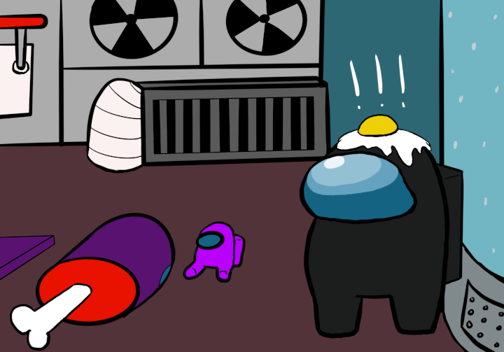

Oxygen Room
The Oxygen room is in sight, but you see something sticking out from the wall. It looks like something purple. Purple does have a mini purple astronaut buddy with them, so maybe it's them. What you thought was the purple buddy was actually... PURPLE'S DEAD BODY! Better report the body!